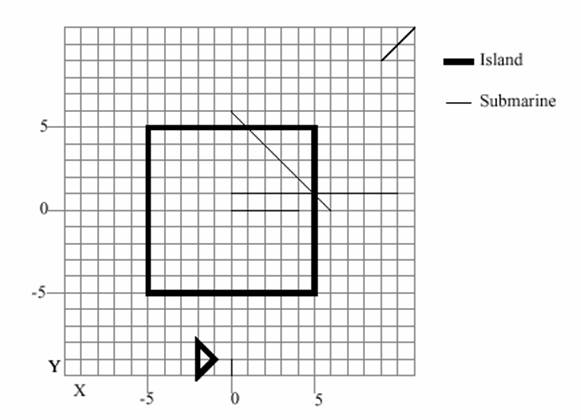

<!DOCTYPE HTML PUBLIC "-//W3C//DTD HTML 4.0 Transitional//EN">
<!-- saved from url=(0044)http://plg.uwaterloo.ca/~acm00/98oct4/C.html -->
<html xmlns:v="urn:schemas-microsoft-com:vml"
xmlns:o="urn:schemas-microsoft-com:office:office"
xmlns:w="urn:schemas-microsoft-com:office:word"
xmlns="http://www.w3.org/TR/REC-html40">

<head>
<meta http-equiv=Content-Type content="text/html; charset=windows-1252">
<meta name=ProgId content=Word.Document>
<meta name=Generator content="Microsoft Word 10">
<meta name=Originator content="Microsoft Word 10">
<link rel=File-List href="p3_files/filelist.xml">
<link rel=Edit-Time-Data href="p3_files/editdata.mso">
<!--[if !mso]>
<style>
v\:* {behavior:url(#default#VML);}
o\:* {behavior:url(#default#VML);}
w\:* {behavior:url(#default#VML);}
.shape {behavior:url(#default#VML);}
</style>
<![endif]-->
<title>Problem D - August2002 Monthly Contest</title>
<!--[if gte mso 9]><xml>
 <o:DocumentProperties>
  <o:Author>Administrator</o:Author>
  <o:LastAuthor>Shahriar Manzoor</o:LastAuthor>
  <o:Revision>34</o:Revision>
  <o:TotalTime>68</o:TotalTime>
  <o:Created>2001-07-24T16:03:00Z</o:Created>
  <o:LastSaved>2002-08-06T07:18:00Z</o:LastSaved>
  <o:Pages>1</o:Pages>
  <o:Words>383</o:Words>
  <o:Characters>2188</o:Characters>
  <o:Company>BUET</o:Company>
  <o:Lines>18</o:Lines>
  <o:Paragraphs>5</o:Paragraphs>
  <o:CharactersWithSpaces>2566</o:CharactersWithSpaces>
  <o:Version>10.2625</o:Version>
 </o:DocumentProperties>
</xml><![endif]--><!--[if gte mso 9]><xml>
 <w:WordDocument>
  <w:Zoom>75</w:Zoom>
  <w:SpellingState>Clean</w:SpellingState>
  <w:GrammarState>Clean</w:GrammarState>
  <w:BrowserLevel>MicrosoftInternetExplorer4</w:BrowserLevel>
 </w:WordDocument>
</xml><![endif]-->
<style>
<!--
 /* Style Definitions */
 p.MsoNormal, li.MsoNormal, div.MsoNormal
	{mso-style-parent:"";
	margin:0in;
	margin-bottom:.0001pt;
	mso-pagination:widow-orphan;
	font-size:12.0pt;
	font-family:"Times New Roman";
	mso-fareast-font-family:"Times New Roman";}
h2
	{mso-margin-top-alt:auto;
	margin-right:0in;
	mso-margin-bottom-alt:auto;
	margin-left:0in;
	mso-pagination:widow-orphan;
	mso-outline-level:2;
	font-size:18.0pt;
	font-family:"Times New Roman";
	font-weight:bold;}
h3
	{mso-margin-top-alt:auto;
	margin-right:0in;
	mso-margin-bottom-alt:auto;
	margin-left:0in;
	mso-pagination:widow-orphan;
	mso-outline-level:3;
	font-size:13.5pt;
	font-family:"Times New Roman";
	font-weight:bold;}
p.MsoBodyText, li.MsoBodyText, div.MsoBodyText
	{margin:0in;
	margin-bottom:.0001pt;
	text-align:justify;
	mso-pagination:widow-orphan;
	font-size:12.0pt;
	font-family:"Times New Roman";
	mso-fareast-font-family:"Times New Roman";}
p
	{mso-margin-top-alt:auto;
	margin-right:0in;
	mso-margin-bottom-alt:auto;
	margin-left:0in;
	mso-pagination:widow-orphan;
	font-size:12.0pt;
	font-family:"Times New Roman";
	mso-fareast-font-family:"Times New Roman";}
pre
	{margin:0in;
	margin-bottom:.0001pt;
	mso-pagination:widow-orphan;
	tab-stops:45.8pt 91.6pt 137.4pt 183.2pt 229.0pt 274.8pt 320.6pt 366.4pt 412.2pt 458.0pt 503.8pt 549.6pt 595.4pt 641.2pt 687.0pt 732.8pt;
	font-size:10.0pt;
	font-family:"Courier New";
	mso-fareast-font-family:"Courier New";}
@page Section1
	{size:8.5in 11.0in;
	margin:1.0in .8in 1.0in .8in;
	mso-header-margin:.5in;
	mso-footer-margin:.5in;
	mso-paper-source:0;}
div.Section1
	{page:Section1;}
-->
</style>
<!--[if gte mso 10]>
<style>
 /* Style Definitions */
 table.MsoNormalTable
	{mso-style-name:"Table Normal";
	mso-tstyle-rowband-size:0;
	mso-tstyle-colband-size:0;
	mso-style-noshow:yes;
	mso-style-parent:"";
	mso-padding-alt:0in 5.4pt 0in 5.4pt;
	mso-para-margin:0in;
	mso-para-margin-bottom:.0001pt;
	mso-pagination:widow-orphan;
	font-size:10.0pt;
	font-family:"Times New Roman";}
</style>
<![endif]--><!--[if gte mso 9]><xml>
 <o:shapedefaults v:ext="edit" spidmax="4098"/>
</xml><![endif]--><!--[if gte mso 9]><xml>
 <o:shapelayout v:ext="edit">
  <o:idmap v:ext="edit" data="1"/>
 </o:shapelayout></xml><![endif]-->
</head>

<body lang=EN-US style='tab-interval:.5in'>

<div class=Section1>

<p class=MsoNormal align=center style='text-align:center'><b style='mso-bidi-font-weight:
normal'><span style='font-size:18.0pt;color:black'>Problem D<o:p></o:p></span></b></p>

<p class=MsoNormal align=center style='text-align:center'><b style='mso-bidi-font-weight:
normal'><span style='font-size:24.0pt;color:black'>Submarines</span></b><b
style='mso-bidi-font-weight:normal'><span style='mso-bidi-font-size:10.0pt;
color:black'><o:p></o:p></span></b></p>

<p class=MsoNormal align=center style='text-align:center'><b><span
style='color:black'>Input: </span></b><span style='color:black;mso-bidi-font-weight:
bold'>standard input<o:p></o:p></span></p>

<p class=MsoNormal align=center style='text-align:center'><b><span
style='color:black'>Output: </span></b><span style='color:black'>standard
output<o:p></o:p></span></p>

<p class=MsoNormal align=center style='text-align:center'><b><span
style='color:black'>Time Limit:</span></b><span style='color:black'> 5 seconds<o:p></o:p></span></p>

<p class=MsoNormal align=center style='text-align:center'><b style='mso-bidi-font-weight:
normal'><span style='color:black'>Memory Limit: </span></b><span
style='color:black'>32 MB<o:p></o:p></span></p>

<p class=MsoNormal style='text-align:justify'><o:p>&nbsp;</o:p></p>

<p class=MsoNormal style='text-align:justify;mso-layout-grid-align:none;
text-autospace:none'>The Russian navy has, as you probably know, had some
problems with their submarines in Swedish waters. These problems are very embarrassing
for the Russian military, who has decided to do something about it.</p>

<p class=MsoNormal style='text-align:justify;mso-layout-grid-align:none;
text-autospace:none'><o:p>&nbsp;</o:p></p>

<p class=MsoNormal style='text-align:justify;mso-layout-grid-align:none;
text-autospace:none'>As a first step in their plan, they want to construct a
program for their centre of command to be able to locate their submarines. From
GPSes (Global Positioning Systems) they are able to get X and Y coordinates for
the front and rear points of all submarines. The Russian intelligence has in
addition provided data for all islands in the Swedish waters. With this
information, and with a lot of help from simulations using GPS equipped minks,
Russian programmers have been able to develop a program that, from the
information given, tells the user if a submarine is</p>

<p class=MsoNormal style='text-align:justify;mso-layout-grid-align:none;
text-autospace:none'><o:p>&nbsp;</o:p></p>

<p class=MsoNormal style='text-align:justify;mso-layout-grid-align:none;
text-autospace:none'>1. Still in water</p>

<p class=MsoNormal style='text-align:justify;mso-layout-grid-align:none;
text-autospace:none'>2. Partially on land</p>

<p class=MsoNormal style='text-align:justify;mso-layout-grid-align:none;
text-autospace:none'>3. Entirely on Land</p>

<p class=MsoNormal style='text-align:justify;mso-layout-grid-align:none;
text-autospace:none'><o:p>&nbsp;</o:p></p>
<center>

</center>
<h3 style='text-align:justify'><span style='font-size:18.0pt;mso-bidi-font-size:
13.5pt'>The Input<o:p></o:p></span></h3>

<p class=MsoNormal style='text-indent:.5in;mso-layout-grid-align:none;
text-autospace:none'>• First you will get the number of submarines that are
present in the area. [1..100]</p>

<p class=MsoNormal style='margin-left:.5in;mso-layout-grid-align:none;
text-autospace:none'>• After that, for each submarine, you will get the X and Y
positions first for the submarines<span style='mso-spacerun:yes'>     </span></p>

<p class=MsoNormal style='margin-left:.5in;mso-layout-grid-align:none;
text-autospace:none'><span style='mso-spacerun:yes'>  </span>front and then for
its rear. [-1000..1000]</p>

<p class=MsoNormal style='text-indent:.5in;mso-layout-grid-align:none;
text-autospace:none'>• Then you will get the number of islands in the area.
[1..50]</p>

<p class=MsoNormal style='text-indent:.5in;mso-layout-grid-align:none;
text-autospace:none'><span style='mso-spacerun:yes'>  </span>After that, for
each island you will get the following:</p>

<p class=MsoNormal style='margin-left:.5in;text-indent:.5in;mso-layout-grid-align:
none;text-autospace:none'>• The number of points of the polygon that represents
the island. [3..20]</p>

<p class=MsoNormal style='margin-left:.5in;text-indent:.5in;mso-layout-grid-align:
none;text-autospace:none'>• The X and Y positions of the points. [-1000..1000].</p>

<p class=MsoNormal style='mso-layout-grid-align:none;text-autospace:none'><b><span
style='font-size:18.0pt'><o:p>&nbsp;</o:p></span></b></p>

<p class=MsoNormal style='mso-layout-grid-align:none;text-autospace:none'><b><span
style='font-size:18.0pt'>Input rules<o:p></o:p></span></b></p>

<p class=MsoNormal style='tab-stops:.5in;mso-layout-grid-align:none;text-autospace:
none'>All input are integers.</p>

<p class=MsoNormal style='tab-stops:.5in;mso-layout-grid-align:none;text-autospace:
none'>No submarine end point will be on an island edge.</p>

<p class=MsoNormal style='tab-stops:.5in;mso-layout-grid-align:none;text-autospace:
none'>No submarine will lie on an island edge.</p>

<p class=MsoNormal style='tab-stops:.5in;mso-layout-grid-align:none;text-autospace:
none'>All islands are simple polygons without crossing edges or touching
borders.</p>

<p class=MsoNormal style='tab-stops:.5in;mso-layout-grid-align:none;text-autospace:
none'>The first point of the island is connected to the last point.</p>

<p class=MsoNormal style='tab-stops:.5in;mso-layout-grid-align:none;text-autospace:
none'>All submarines are approximated with a line between the front and rear
points.</p>

<p class=MsoNormal style='tab-stops:.5in;mso-layout-grid-align:none;text-autospace:
none'>Two islands never overlap or touch each other.</p>

<p class=MsoNormal style='tab-stops:.5in;mso-layout-grid-align:none;text-autospace:
none'><o:p>&nbsp;</o:p></p>

<p class=MsoNormal style='tab-stops:.5in;mso-layout-grid-align:none;text-autospace:
none'><b style='mso-bidi-font-weight:normal'><span style='font-size:18.0pt'>The
Output<o:p></o:p></span></b></p>

<p class=MsoNormal style='mso-layout-grid-align:none;text-autospace:none'>Output
contains information about every submarine, in order.</p>

<p class=MsoNormal style='mso-layout-grid-align:none;text-autospace:none'>If
the submarine is all in water, print “Submarine X is still in water.”</p>

<p class=MsoNormal style='mso-layout-grid-align:none;text-autospace:none'>If
the submarine is all on land, print “Submarine X is completely on land.”</p>

<p class=MsoNormal style='mso-layout-grid-align:none;text-autospace:none'>If
the submarine is partially in water and partially on land, print “Submarine X
is partially on land.”</p>

<p class=MsoNormal style='mso-layout-grid-align:none;text-autospace:none'>X is
the submarine’s number (1, 2, 3…) according to its order in the input file.</p>

<h3><span style='font-size:18.0pt;mso-bidi-font-size:13.5pt'>Sample Input (See
image)<o:p></o:p></span></h3>

<p class=MsoNormal style='mso-layout-grid-align:none;text-autospace:none'><span
style='font-size:11.0pt;font-family:"Courier New"'>5<o:p></o:p></span></p>

<p class=MsoNormal style='mso-layout-grid-align:none;text-autospace:none'><span
style='font-size:11.0pt;font-family:"Courier New"'>11 11 9 9<o:p></o:p></span></p>

<p class=MsoNormal style='mso-layout-grid-align:none;text-autospace:none'><span
style='font-size:11.0pt;font-family:"Courier New"'>0 0 4 0<o:p></o:p></span></p>

<p class=MsoNormal style='mso-layout-grid-align:none;text-autospace:none'><span
style='font-size:11.0pt;font-family:"Courier New"'>0 1 10 1<o:p></o:p></span></p>

<p class=MsoNormal style='mso-layout-grid-align:none;text-autospace:none'><span
style='font-size:11.0pt;font-family:"Courier New"'>0 6 6 0<o:p></o:p></span></p>

<p class=MsoNormal style='mso-layout-grid-align:none;text-autospace:none'><span
style='font-size:11.0pt;font-family:"Courier New"'>0 -10 0 -9<o:p></o:p></span></p>

<p class=MsoNormal style='mso-layout-grid-align:none;text-autospace:none'><span
style='font-size:11.0pt;font-family:"Courier New"'>2<o:p></o:p></span></p>

<p class=MsoNormal style='mso-layout-grid-align:none;text-autospace:none'><span
style='font-size:11.0pt;font-family:"Courier New"'>4<o:p></o:p></span></p>

<p class=MsoNormal style='mso-layout-grid-align:none;text-autospace:none'><span
style='font-size:11.0pt;font-family:"Courier New"'>-5 -5<o:p></o:p></span></p>

<p class=MsoNormal style='mso-layout-grid-align:none;text-autospace:none'><span
style='font-size:11.0pt;font-family:"Courier New"'>5 -5<o:p></o:p></span></p>

<p class=MsoNormal style='mso-layout-grid-align:none;text-autospace:none'><span
style='font-size:11.0pt;font-family:"Courier New"'>5 5<o:p></o:p></span></p>

<p class=MsoNormal style='mso-layout-grid-align:none;text-autospace:none'><span
style='font-size:11.0pt;font-family:"Courier New"'>-5 5<o:p></o:p></span></p>

<p class=MsoNormal style='mso-layout-grid-align:none;text-autospace:none'><span
style='font-size:11.0pt;font-family:"Courier New"'>3<o:p></o:p></span></p>

<p class=MsoNormal style='mso-layout-grid-align:none;text-autospace:none'><span
style='font-size:11.0pt;font-family:"Courier New"'>-2 -8<o:p></o:p></span></p>

<p class=MsoNormal style='mso-layout-grid-align:none;text-autospace:none'><span
style='font-size:11.0pt;font-family:"Courier New"'>-1 -9<o:p></o:p></span></p>

<p class=MsoNormal style='mso-layout-grid-align:none;text-autospace:none'><span
style='font-size:11.0pt;font-family:"Courier New"'>-2 -10<o:p></o:p></span></p>

<h3 style='tab-stops:45.8pt 91.6pt 137.4pt 183.2pt 229.0pt 274.8pt 320.6pt 366.4pt 412.2pt 458.0pt 503.8pt 549.6pt 595.4pt 641.2pt 687.0pt 732.8pt'><span
style='font-size:18.0pt;mso-bidi-font-size:13.5pt'>Output for Sample Input<o:p></o:p></span></h3>

<p class=MsoNormal style='mso-layout-grid-align:none;text-autospace:none'><span
style='font-size:11.0pt;font-family:"Courier New"'>Submarine 1 is still in
water.<o:p></o:p></span></p>

<p class=MsoNormal style='mso-layout-grid-align:none;text-autospace:none'><span
style='font-size:11.0pt;font-family:"Courier New"'>Submarine 2 is completely on
land.<o:p></o:p></span></p>

<p class=MsoNormal style='mso-layout-grid-align:none;text-autospace:none'><span
style='font-size:11.0pt;font-family:"Courier New"'>Submarine 3 is partially on
land.<o:p></o:p></span></p>

<p class=MsoNormal style='mso-layout-grid-align:none;text-autospace:none'><span
style='font-size:11.0pt;font-family:"Courier New"'>Submarine 4 is partially on
land.<o:p></o:p></span></p>

<p class=MsoNormal style='tab-stops:45.8pt 91.6pt 137.4pt 183.2pt 229.0pt 274.8pt 320.6pt 366.4pt 412.2pt 458.0pt 503.8pt 549.6pt 595.4pt 641.2pt 687.0pt 732.8pt'><span
style='font-size:11.0pt;font-family:"Courier New"'>Submarine 5 is still in
water.</span></p>

<div class=MsoNormal align=center style='text-align:center;tab-stops:45.8pt 91.6pt 137.4pt 183.2pt 229.0pt 274.8pt 320.6pt 366.4pt 412.2pt 458.0pt 503.8pt 549.6pt 595.4pt 641.2pt 687.0pt 732.8pt'>

<hr size=2 width="100%" align=center>

</div>

<p class=MsoNormal style='tab-stops:45.8pt 91.6pt 137.4pt 183.2pt 229.0pt 274.8pt 320.6pt 366.4pt 412.2pt 458.0pt 503.8pt 549.6pt 595.4pt 641.2pt 687.0pt 732.8pt'><b
style='mso-bidi-font-weight:normal'>Swedish National Contest<o:p></o:p></b></p>

<pre><o:p>&nbsp;</o:p></pre></div>

</body>

</html>
